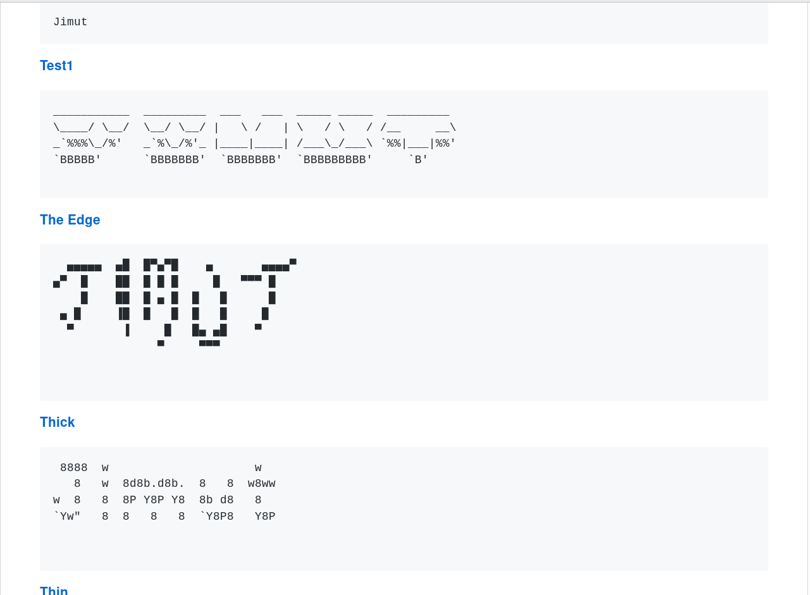

jimner - Jimut's banner CLI
A banner prototype for CLI/ UNIX / LINUX /WINDOWS. ASCII art!


Purpose :
A banner cli and library for generating banner text for patch, CLI, README, ASCII art and having 314 font samples, modified and ported version of Pyfiglet, since this uses portable JSON data!